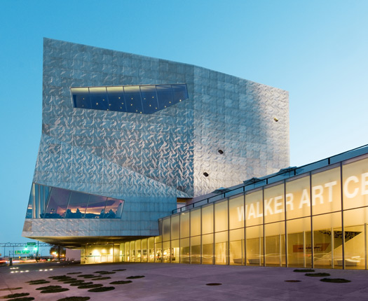
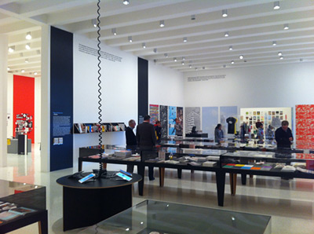
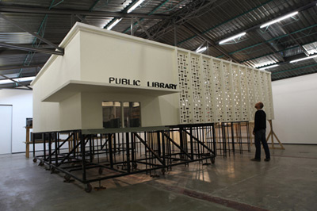

Walker Art Center

The Walker Art Center is a contemporary art center in Minneapolis, Minnesota, United States. The Walker is considered one of the nation's "big five" museums for modern art along with the Museum of Modern Art, the San Francisco Museum of Modern Art, the Guggenheim Museum and the Hirshhorn. It was founded in 1879 by lumberman Thomas Barlow Walker and which he formally established at its current location in 1927 as the first public art gallery in the Upper Midwest. Directly across from the museum are the Minneapolis Sculpture Garden, which opened in 1988; and the Cowles Conservatory. The Walker Art Center underwent a renovation and expanded the museum in April 2005.
The Visual Arts program is a mix of contemporary, historical, group, monographic, thematic, and media-specific shows. Certain artists have had their first major museum exposure in Walker exhibitions, among them Joseph Cornell, Frank Gehry, Julie Mehretu, Mario Merz, and Kara Walker. In 1995, the museum displayed the YBA showcase Brilliant!.
Exhibitions

This major international exhibition explores how graphic design has broadened its reach dramatically over the past decade, expanding from a specialized profession to a widely deployed tool. With the rise of user-generated content and new creative software, along with innovations in publishing and distribution systems, people outside the field are mobilizing the techniques and processes of design to create and publish visual media. At the same time, designers are becoming producers: authors, publishers, instigators, and entrepreneurs employing their creative skills as makers of content and shapers of experiences.

The Walker presents the latest phase and first US exhibition of Baby Marx, an ongoing project by Mexican artist Pedro Reyes that looks at the potential for mass entertainment to operate as a radical educational tool. An architect by training, Reyes works across platforms and disciplines-including design, installation, and video-to explore sites and scenarios of collective interaction. Originally conceived for television, Baby Marx is set in a small town library where a group of precocious children have brought Karl Marx and Adam Smith back to life by zapping their influential books in a glitch-prone "Smart-O-Wave" microwave oven. The founders of communism and the free market confront each other and their legacies, haunted by the twin specters of Joseph Stalin and Bernie Madoff, as well as the latest global economic crisis.
About the Walker
Hours
- Tuesday-Sunday, 11 am-5 pm
- Open late Thursday, 11 am-9 pm
- Closed Mondays and major holidays: New Year's Day, Martin Luther King, Jr., President's Day, Memorial Day, Independence Day, Labor Day, Thanksgiving, and Christmas Day
Directions
Address
Walker Art Center, 1750 Hennepin Ave., Minneapolis, Minnesota 55403
Directions
The Walker is located in Minneapolis at 1750 Hennepin Avenue, where Lyndale and Hennepin avenues merge.
If heading east on I-94, take 231A and go south on Hennepin/Lyndale. If heading west on I-94, take Exit 231B and go north on Lyndale/Hennepin. If heading east on I-394, take Exit 8A and go south on Lyndale/Hennepin.
Transit
The Walker is served by Metro Transit bus lines 4, 6, 12, and 25.